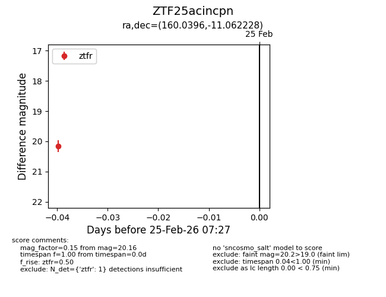
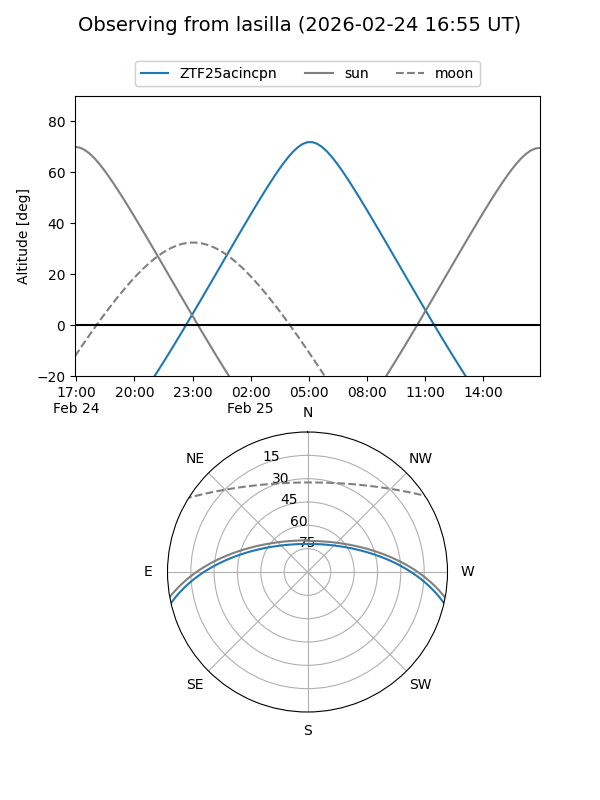
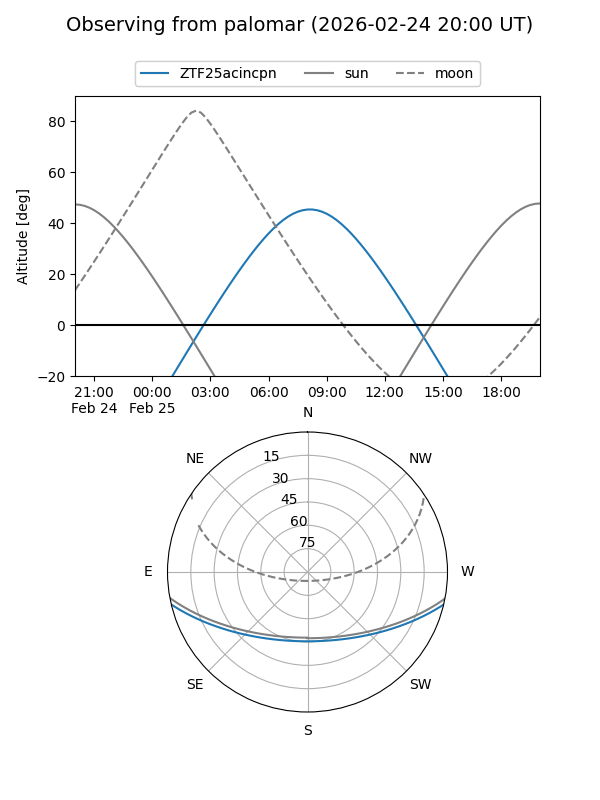

ZTF25acincpn
Target ZTF25acincpn at 2026-02-25 07:28
Aliases and brokers:
FINK: link
Lasair: link
ALeRCE: link
alt names
ZTF25acincpn (ztf,fink_ztf)
Coordinates:
equatorial (ra, dec) = 160.0396,-11.06223
equatorial (HMS+DMS) = 10:40:09.52,-11:03:44.02
galactic (l, b) = (258.7242,+40.28112)
Flags:
Photometry:
last ztfr=20.16
1 ztfr detections
Lightcurve

Visibility


Additional plots